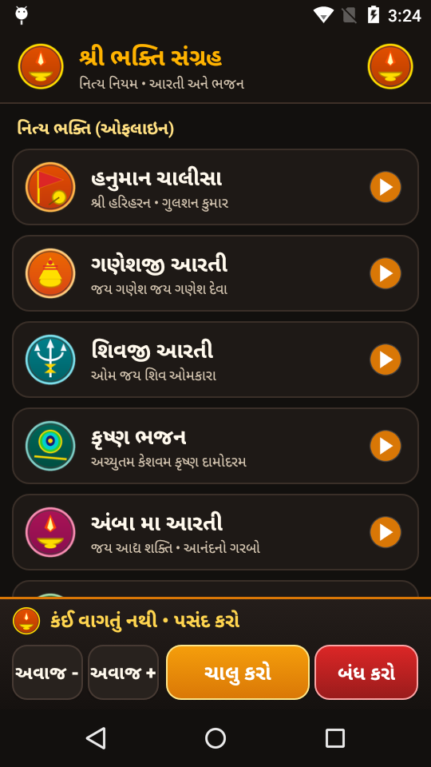
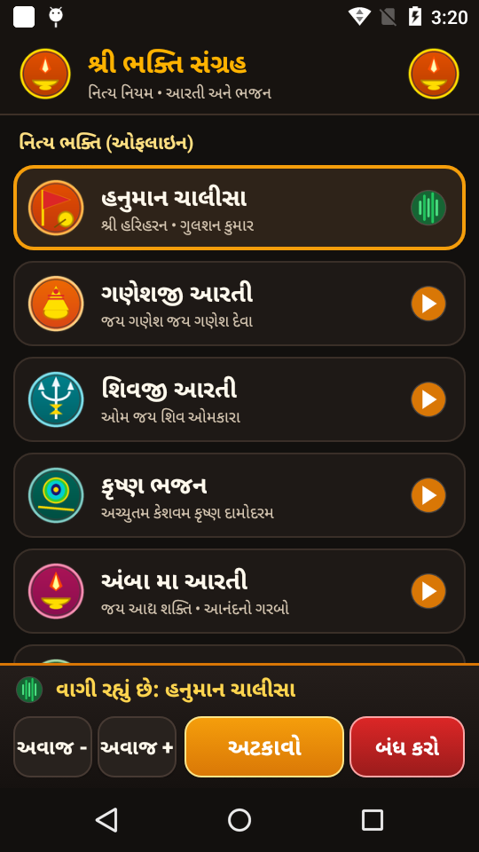
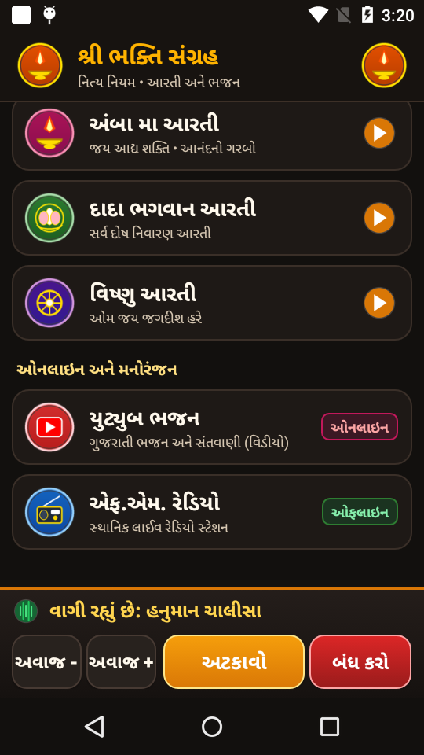

01. Hardware Skeleton & Anatomy
Every legacy smartphone houses high-grade precision hardware: a multi-core SoC, tuned acoustic speaker chambers, Wi-Fi/Bluetooth radios, power management ICs, and high-DPI IPS displays. Here is the physical deconstruction of our target device (Motorola Moto E 2nd Gen LTE — XT1528):

Isometric Engineering Breakdown: Exploded projection showing the polycarbonate shell, 2390 mAh lithium battery, Snapdragon 410 SoC board, front-firing speaker chamber, IPS panel, and Corning Gorilla Glass 3 lens.
02. The Software Transformation Stack
The reason old phones feel "slow" is almost never the hardware. It is the crushing weight of 50+ background carrier telemetry services and modern Google Play Services consuming 94% of physical RAM:

03. Flagship Appliance: શ્રી ભક્તિ સંગ્રહ (Bhakti Player)
Our primary implementation transforms the Moto E into an exclusive, dedicated Devotional Media Hub designed specifically for elderly Gujarati-speaking users. The dialer, contacts, and menus are eliminated, replaced with high-contrast divine cards and 1-touch offline playback:




Key Gerontology & Accessibility Innovations:
- Sacred Divine Emblems: Custom high-resolution deity badges (Gada, Modak, Trishul, Peacock Feather, Diya, Lotus, Chakra) for instant recognition without reading.
- Full-Width Touch Cards (64dp): Oversized touch targets spanning the entire display to accommodate senior motor precision.
- Direct Search Routing: Tapping YouTube Bhajan routes directly to live Gujarati Bhajan video results in NewPipe, skipping confusing homepage feeds.
- Pinned Bottom Dock: Persistent player controls (Pause, Stop, Volume +, Volume -) anchored permanently to the bottom of the screen.
04. Universal Appliance Catalog: What Else Can You Build?
Wireless Barcode & QR Scanner
Turn an old camera phone into an enterprise barcode terminal for inventory or retail POS. Emulates Bluetooth HID keyboard (types SKU directly into PC/Mac) or dispatches WebSocket payloads to Shopify/ERP.
Wall-Mounted Smart Home Kiosk
Permanent touch controller for Home Assistant. Uses the front proximity sensor to wake the screen when a hand approaches, keeping power draw under 0.2W when idle.
RTSP Security & Baby Monitor
Repurpose the phone's camera and hardware H.264 video encoder into an ONVIF / RTSP local stream over Wi-Fi, without monthly cloud subscription fees.
Kitchen Recipe & Multi-Timer Station
Dedicated cooking tablet with high-contrast multi-pot timers, grocery list syncing, and always-on display calibration.
05. 3-Step Quickstart: Resurrect Your Old Phone
Transform your old device in under 5 minutes using ADB:
Step 1: Connect Phone via USB & Verifyadb devicesStep 2: Run Universal Carrier Debloater
powershell -File scripts/debloat_carrier.ps1Step 3: Install Dedicated Kiosk Appliance
adb install -r apk/BhaktiPlayer.apk